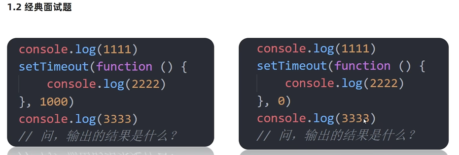

JavaScript语言的一大特点就是单线程，也就是说，同一个时间只能做一件事。这是
因为Javascript这门脚本语言诞生的使命所致——JavaScript 是为处理页面中用户的
交互，以及操作DOM而诞生的。比如我们对某个DOM元素进行添加和删除操作，不能同时
进行。应该先进行添加，之后再删除。
单线程就意味着，所有任务需要排队，前一个任务结束，才会执行后一个任务。这样所
导致的问题是:如果JS执行的时间过长，这样就会造成页面的渲染不连贯，导致页面渲染
加载阻塞的感觉。
为了解决这个问题，利用多核CPU的计算能力，HTML5提出 web worker标准，允许JavaScript
脚本创建多个线程。于是，JS中出现了同步和异步。